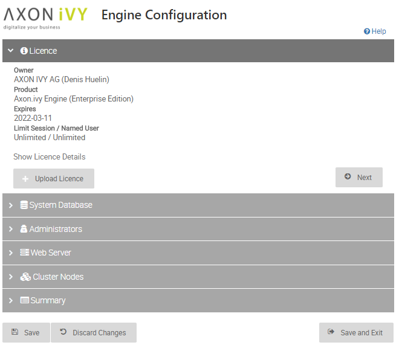
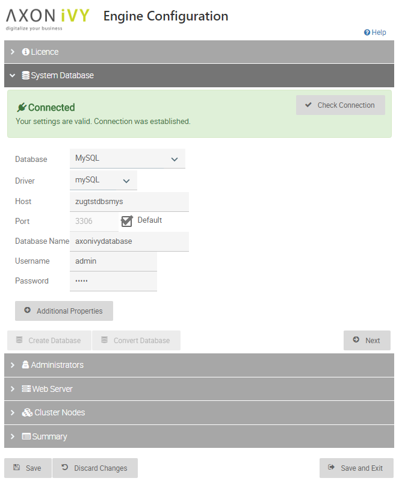
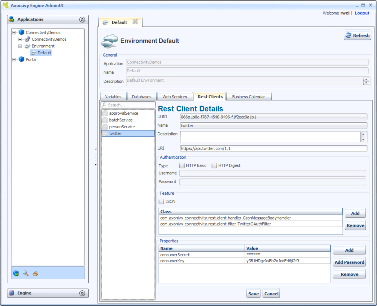
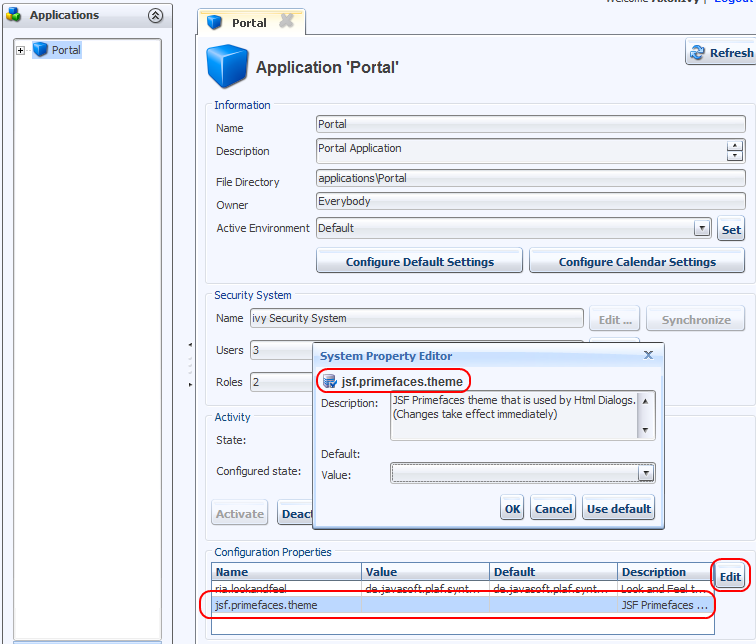
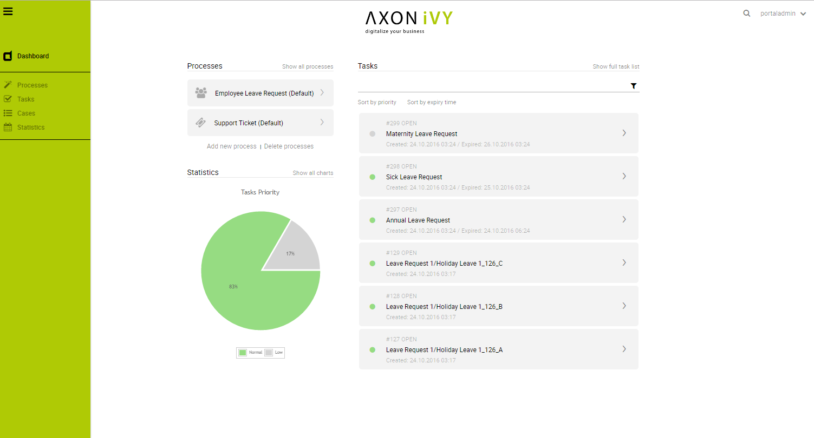
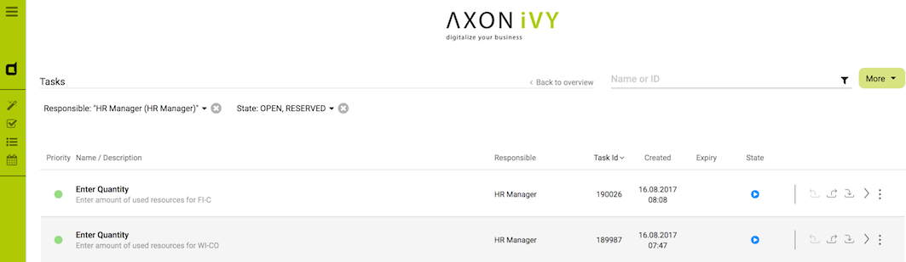
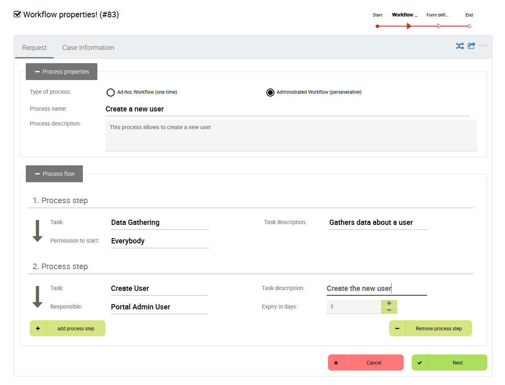

New and Noteworthy for Axon.ivy Engine 7.0 (Jakobshorn)
This document describes all new and noteworthy features of the Axon.ivy Engine 7.0 (Jakobshorn) release.
Only a brief overview of important new features is provided here. It is recommended that you consult the respective sections of the updated Engine Guide if you desire more detailed information about individual new features.
If you are interested in features introduced in the previous release have a look at the Axon.ivy Engine 6.0 New and Noteworthy
The contents of this file have been grouped into different sections with related content:
MIGRATION OF 6.0 ENGINE INSTALLATIONS
See the separate Migration Notes to learn about what needs to be done to get your projects running with Axon.ivy 7.0 (Jakobshorn).
Selected Features
OSGi
OSGi based Engine
The Axon.ivy Engine is now, like the Designer, based on a technology called OSGi.
Therefore, the runtime environment of an Engine and a Designer is nearly the same now. This prevents problems where a Axon.ivy project runs on the Designer but not on the Engine (class loading, different library versions, etc.)
Axon.ivy Extensions
The extension mechanism of the Axon.ivy Designer and the Engine is now the same since they both run in OSGi mode:
- The installation of extensions like the BIRT process elements is now streamlined. Simply copy your JAR to
dropinsand it will be available at runtime. Thepluginsdirectory should only be used for automatically installed plugins.

- Like in the Axon.ivy Designer the Engine now also supports the Eclipse extension point mechanism.
Therefore, extensions can be registered in the plugin.xml that is in your Axon.ivy extension bundle (*.jar file).
See Help > Designer Guide > Concepts > Extensions for more information.
Engine Config
New Engine Config
The old ServerConfiguration is replaced by the new Engine Config, which is now based on JSF.
Now, you can upload the licence directly in the config.
See Engine Guide > Configuration > Engine Configuration > Licence for more information.

See Engine Guide > Configuration > Engine Configuration > System Database for more information.
EngineConfigCli
The new console program can be used to configure the Axon.ivy Engine.

Execute EngineConfigCli help or EngineConfigCli <command> help for more information.
Administration Tool
REST Clients
REST Clients can now be configured in the environment editor.
See Engine Guide > Administration > Environments > REST Clients for more information.
Primefaces Theme per Application
The Primefaces theme can now be configured per application and session. There is a new application configuration property available in the Admin UI to configure it. If it is not configured the default theme is used. 
See Engine Guide > Miscellaneous > Html Dialogs > Primefaces Theme for more information.
Deployment
Deployment directory
A running Axon.ivy Engine has now an auto deployment directory.
It makes simple deployment of Axon.ivy projects to an Axon.ivy Engine possible by copying the project into the deploy directory of the Engine.
See Engine Guide > Administration > Project deployment > Deployment directory for more information.
Maven command line deployment
The deployment of Axon.ivy project to a running Engine is now possible with Maven.
The following example deploys the project 'myProject.iar' to the application 'Portal' of the Engine location under 'c:/axonivy/engine':
mvn com.axonivy.ivy.ci:project-build-plugin:7.0.0-SNAPSHOT:deploy-iar -Divy.deploy.iarFile=myProject.iar -Divy.deploy.engine.dir=c:/axonviy/engine -Divy.deploy.engine.app=Portal
See the 'iar-deploy' goal documentation on GitHub for more information.
Process Model Version activity and release states
The process model version activity and release state handling has been optimized. ARCHIVED process model versions are no longer started and therefore do not waste resources (memory, CPU).
See Migration Notes for more information.
Portal
Redesigned Portal
The whole Portal has been redesigned and extensively improved in UI and UX. 
The standard Portal is bundled with the Engine. It is implemented by developers for developers. Feel free to customize it.
See Axon.ivy Portal Documentation for more information.
Task search
Axon.ivy Portal offers now users to filter tasks by various criteria. Additional conditions can even be added in your customized Portal. 
See Axon.ivy Portal Documentation for more information.
Axon.ivy Express
Axon.ivy Express allows to create and run simple processes directly on the Engine (No Designer or deployment is needed). It is very simple to define a new process. You don't need to know BPMN or a scripting language. 
See Axon.ivy Portal Documentation for more information.
Monitoring
System Database and CMS Cache
System Database and CMS Caches can now be monitored with JMX. The caches provide attributes for:
readHits: Number of times an object was found in the cache.readMisses: Number of times an object was not found in the cache.writes: Number of writes into the cache.cachedObjects: Number of objects in the cache.
The attributes of the cache strategies can be manipulated and the caches can be cleared with JMX during runtime.
See Engine Guide > Monitoring > Java Management Extensions (JMX) > Provided MBeans for more information.
The following attributes of thread pools can now be monitored with JMX:
corePoolSize: Number of threads used at least by the thread pool.maximumPoolSize: Maximum number of threads used by the thread pool.poolSize: Current number of threads in the thread pool.activeCount: Number of threads currently in use (not idle).queueSize: Number of jobs in the queue waiting for a free thread to execute it.
See Miscellaneous > Thread Pool Configuration to learn how to configure thread pools.
See Engine Guide > Monitoring > Java Management Extensions (JMX) > Provided MBeans for more information.
The following attributes of external REST Web Services calls can now be monitored with JMX:
calls: Number of calls executed.callsTotalExecutionTimeInMicroSeconds: Total time used to execute the calls.errors: Number of errors occured.callHistory: Detailed information about the last executed calls.slowestCalls: Detailed information about the slowest executed calls.- ...
See Engine Guide > Monitoring > Java Management Extensions (JMX) > Provided MBeans for more information.
Security
Security Headers
The Axon.ivy Engine comes now with some predefined Security Headers which are set on HTTP Responses.
See Engine Guide > Configuration > Configure Tomcat > Security Headers for more information.
Stronger password encryption
The passwords stored in the system database are now protected by using state of the art hashing (bcrypt) and encryption (AES) algorithms.
With the migration to 7.0 (or at least 6.2) old passwords are automatically converted to the new algorithms during the first server startup.
SSO valve for WAF/IAM
There is a new Single Sign On Valve (ch.ivyteam.ivy.webserver.security.SingleSignOnValve) available that can be activated in the context.xml file.
The valve can be used to integrate the Axon.ivy Engine into a Web Application Firewall (WAF) / Identity and Access Management (IAM) environment and support SSO.
See Engine Guide > Integration > Web Application Firewall for more information.
Miscellaneous
The number of threads that are used by thread pools in Axon.ivy can now be configured with system properties:
ThreadPool.*.CorePoolSize: Number of threads used at least by the thread pool.ThreadPool.*.MaximumPoolSize: Maximum number of threads used by the thread pool.
See Monitoring > Thread Pools to learn how to monitor thread pools.
See Engine Guide > Administration > System Properties and Engine Guide > Monitoring > Java Management Extensions (JMX) > Provided MBeans for more information.
System Task Failure Behaviour
The default behaviour for failing system tasks can now be configured with the system property
SystemTask.Failure.Behaviour. As with old versions of the engine, it's still possible to
override the failure behaviour for a single task.
See Public API > ch.ivyteam.ivy.workflow.SystemTaskFailureBehaviour for more information.
Linux service based on systemd
The scripts to run the Axon.ivy Engine as a service under Linux are now based on systemd (AxonIvyEngine.service).
See Engine Guide > Miscellaneous > Tool Reference > InstallService for more information.
REST API
There is a new workflow REST API to get all process starts that can be started by the authenticated user.
HTTP GET /ivy/api/{application name}/workflow/processstarts
Tomcat 8.5
Elasticsearch 5.5
Elasticsearch which is used to index business data and provides the search functionality has been updated from 2.3.4 to 5.5.0.
Windows Server 2016
SQL Server 2016
Windows Server 2016 and Microsoft SQL Server 2016 is now officially supported.